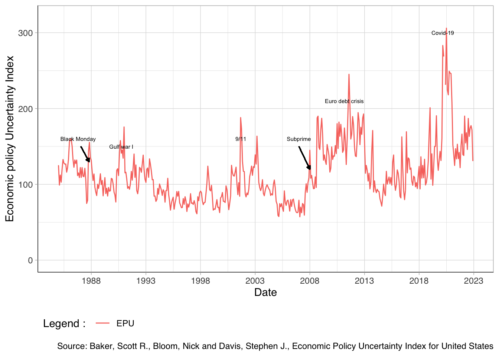

Purpose
This post aims to demonstrate how you can use annotate and geom_segment from ggplot2in order to valuate your time series analysis. This exemple is inspired by the the work of Baker et al., 20161.
Code
plot_EPU <- ggplot(base, aes(x = Date))+
geom_line(aes(y = base$EPU, color = "EPU")) +
scale_x_date(date_labels = "%Y", date_breaks = "5 years")+
scale_y_continuous(limits = c(0,320))+
theme_light()+
theme(axis.line = element_line(colour = "black",size = 0.2, linetype = "solid"))+
annotate("text", x = as.Date("2020-03-01", format = "%Y-%m-%d"), y = 300, label = "Covid-19", color = "black", angle=0, size = 2)+
annotate("text", x = as.Date("2007-01-01", format = "%Y-%m-%d"), y = 160, label = "Subprime", color = "black", angle=0, size = 2)+
annotate("text", x = as.Date("1986-10-19", format = "%Y-%m-%d"), y = 160, label = "Black Monday", color = "black", angle=0, size = 2)+
annotate("text", x = as.Date("2001-09-11", format = "%Y-%m-%d"), y = 160, label = "9/11", color = "black", angle=0, size = 2)+
annotate("text", x = as.Date("2011-03-01", format = "%Y-%m-%d"), y = 210, label = "Euro debt crisis", color = "black", angle=0, size = 2)+
annotate("text", x = as.Date("1990-10-01", format = "%Y-%m-%d"), y = 150, label = "Gulf war I", color = "black", angle=0, size = 2)+
geom_segment(aes(x = as.Date("2007-01-01", format = "%Y-%m-%d"), y = 150, xend = as.Date("2008-01-01", format = "%Y-%m-%d") , yend=120), arrow = arrow(length=unit(.12, 'cm'),type = "closed"))+
geom_segment(aes(x = as.Date("1987-01-19", format = "%Y-%m-%d"), y = 150, xend = as.Date("1987-10-19", format = "%Y-%m-%d") , yend=130), arrow = arrow(length=unit(.12, 'cm'),type = "closed"))+
theme(legend.position='bottom',
legend.justification='left',
legend.direction='horizontal')+
xlab("Date") + ylab("Economic policy Uncertainty Index") +
labs(caption = "Source: Baker, Scott R., Bloom, Nick and Davis, Stephen J., Economic Policy Uncertainty Index for United States", color = "Legend : ") +
theme(text = element_text(family = "Helvetica"))
plot_EPU